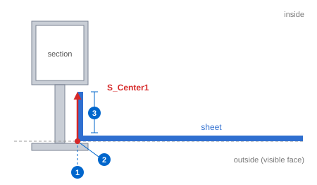
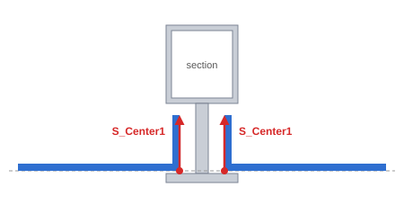
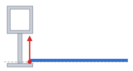
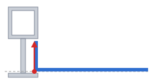
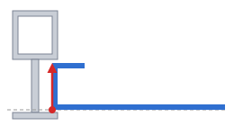
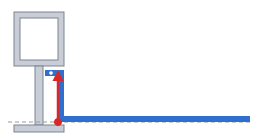
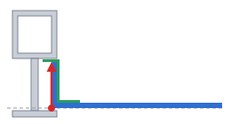
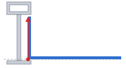

To make a sheet panel, the section group that holds the sheet must contain a line on the S_Center1 layer. That single line sets the position of the sheet, its front face, and the fold depth. This page explains how to draw the line and which sheets can be made from it.
S_Center1 line in the section → SSP (register sections) → ShMD → Sht → ShNo → ShList → ShTable → ShFd
| No. | Of the line | Of the sheet |
|---|---|---|
| 1 | Position of the line | Edge of the sheet — the outer face of the folded leg lies on this line. It sets how far from the member the sheet ends. |
| 2 | Start point of the line | Front (visible) face of the sheet. The panel face lies in the plane through the start point. |
| 3 | Length of the line | Fold depth (outer dimension). With Depth set to From surface in Sht, the sheet is folded by this length. |
| Item | Description |
|---|---|
| Layer | Must be the S_Center1 layer. Draw it the same way as the G_Center1 line for glass. |
| Section group | Add the line to the group of that section. Lines outside the group are not read. |
| Direction | The line has a direction. Draw it from the front (outside) toward the inside, straight and perpendicular to the panel face (the same direction as the glass line). The start point is the front face, and the length to the end point is the depth. |
| One line per bay | If the section has a sheet on both sides, draw two lines, one for each bay. An end member with a sheet on one side needs one line. Do the same for a transom with bays above and below. |
| Front face of the four sides | The lines of the four sections around a bay must have their start points in one plane. If they differ by more than 0.5 mm, no panel face is made and a message is shown. |
| Section registration | After adding or changing a line, run SSP again. |

| Case | Result |
|---|---|
Every side of the bay has an S_Center1 line on that bay side | Sheet bay — ShMD creates the panel face (Sheet_XX). |
| No line at all | Treated as a glass bay and skipped. |
| Line on some sides only | Nothing is made and the missing sides are reported by name. Add the line to those sections. |
From the same line, the options of Sht produce the sheets below. The position and start point of the line are used by every shape. In every figure the bottom is the visible face.






| Item | Description |
|---|---|
| Different depth per side | Draw the lines with different lengths in each section and the sheet gets a different depth on each side (From surface). |
| Typing the depth | With Enter values in Sht, the typed values are used instead of the line length. The position and front face of the line are still used. |
| Sloped bays | Bays with a sloped transom or mullion (trapezoid, parallelogram) are made the same way. |
| Return length, holes, profile | Set in the option window of Sht, independent of the line. |
| Command | Description |
|---|---|
| SSP | Section registration — run it after adding the line. |
| ShMD | Sheet bay surface — creates panel faces in the bays that have the line. |
| Sht | Sheet modeling — creates folded sheets from the panel faces. |